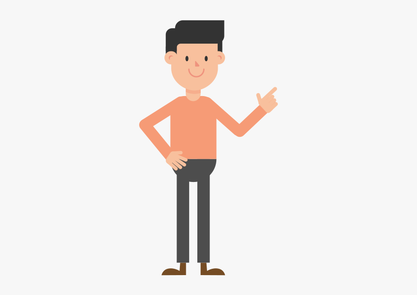

Hello, this is Ahamed Salman
Im a professional web designer from INDIA.
Im a professional web designer from INDIA.

Welcome to my web designer portfolio, where creativity and technology converge to create captivating digital experiences. I am thrilled to present a curated collection of my work, showcasing the dynamic fusion of design aesthetics, user-centered functionality, and cutting-edge technologies.In this portfolio, you will find a diverse range of web projects that reflect my passion for crafting visually appealing and intuitive websites. Each project is a testament to my dedication to delivering seamless user journeys while maintaining a keen eye for detail and aesthetic harmony.
sleek and modern corporate websites that convey a brand's identity, to immersive e-commerce platforms that make online shopping a delightful adventure, my portfolio embodies the versatility of my skills. By integrating the latest design trends and responsive frameworks, I strive to ensure that each website I create is not just a digital presence, but an interactive masterpiece that engages visitors and leaves a lasting impression.
the visual allure, my portfolio demonstrates a commitment to user-centered design. Extensive research and meticulous planning underpin each project, ensuring that the end result aligns perfectly with the target audience's needs and preferences. Through strategic use of color palettes, typography, and intuitive navigation, I create interfaces that are both captivating and user-friendly.
As you explore my portfolio, I invite you to witness the evolution of my craft and the progression of my skills. Every project is a stepping stone in my journey as a web designer, and I am excited to share these milestones with you. Whether you're a potential client seeking innovative solutions or a fellow enthusiast of design, I hope my portfolio leaves you inspired and eager to embark on a digital journey of your own. Thank you for taking the time to delve into my world of web design. I look forward to the possibility of collaborating on future projects and bringing captivating visions to life.